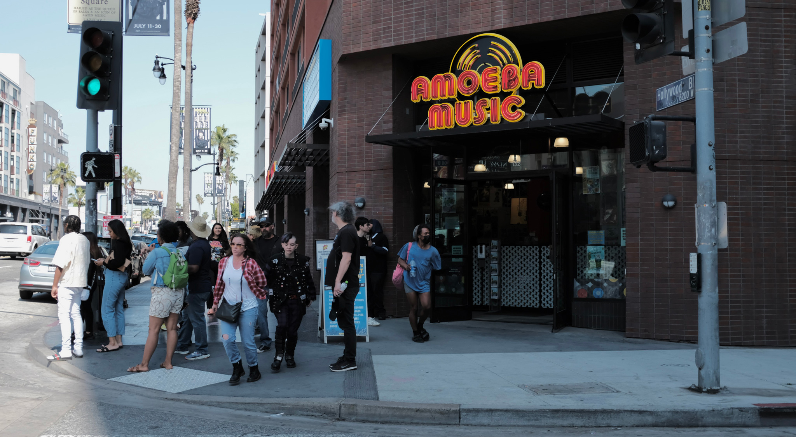
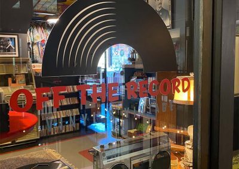
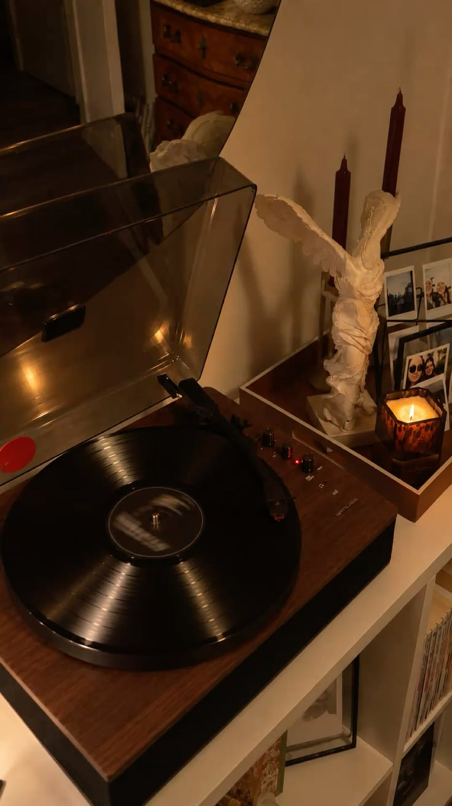

The record find
What did you find? Tell us the artist, pressing, condition, price, and why it came home with you.
Every collector has a story. Tell us about the record you found, the shop you stumbled into, or the album you can't stop playing.
Share your story ↓
It's the shop that played your favorite song while you browsed. The sleeve you almost passed over. The unexpected conversation at the listening station. We want to hear about all of it.
Share a record-hunting experience, write about a recent pickup, or send a photo of your latest find for a future community gallery.
Big scores and small discoveries are equally welcome.
What did you find? Tell us the artist, pressing, condition, price, and why it came home with you.

Give another collector the inside scoop: the neighborhood, the atmosphere, and what makes the shop worth a visit.

Write about an album you rediscovered, a first spin, or the record that changed your listening habits.
Want to go deeper? Explore record-collecting stories and crate-digging videos from collectors around the world.
Watch crate-digging videos ↗